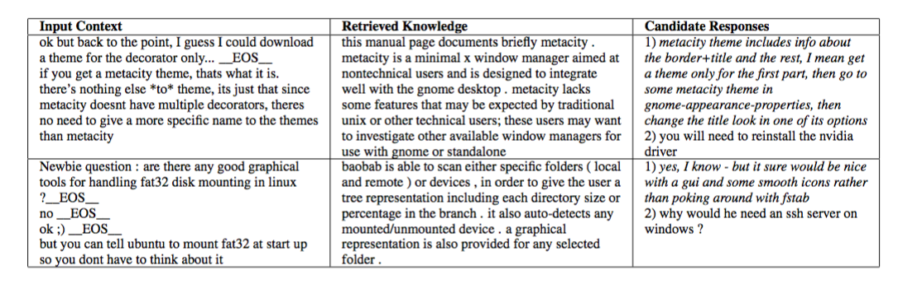

Incorporating Unstructured Textual Knowledge Sources into Neural Dialogue Systems #PaperWeekly#
本文是Ubuntu Dialogue Corpus贡献者的一篇文章，是接着Ubuntu数据集benchmark的model继续改进了一下。本文的题目是Incorporating Unstructured Textual Knowledge Sources into Neural Dialogue。作者是来自麦吉尔大学的博士生Ryan Lowe。
作者将bot任务定义为next utterance classification，有一点像question answering任务，给定一个context和一个response candidate list作为备选答案，通过context来从candidate list中选择正确的response。本文的贡献在于在context的基础上，引入了task相关的外部专业知识库，并且这个知识库是非结构化的。

这个模型是ubuntu corpus中的baseline模型，称为dual encoder，一个rnn来encode context，一个rnn来encode response，然后综合起来做预测。

本文模型相当于在dual encoder基础上增加了一个knowledge部分。模型是三个rnn encoder组成，一个rnn来encode context，一个rnn来encode response，还有一个rnn来encode knowledge，然后综合起来做预测，选出最合适的response。模型被称作knowledge encoder。
因为是ubuntu technical support相关的数据集，外部资源就选用了Ubuntu Manpages，各种命令的手册，通过从context中提取entity来匹配最相关的command manpage，为了快速定位manpage，用了hash的方法，先做了一个command entity hashtable和relation hashtable，一个是为了完全匹配，一个是为了相关匹配。得到相关的manpage之后，所包括的文本就是knowledge。效果如下图：

本文定义的问题太过简单，与实际应用相去甚远。但本文用非结构化的外部知识来解决task-oriented bot问题的思路值得借鉴，不仅仅是bot问题，在问答系统中，外部知识如何应用，如何与神经网络模型结合起来使用都是一个非常重要的topic，也是真正可以用来解决实际问题的一种重要手段。